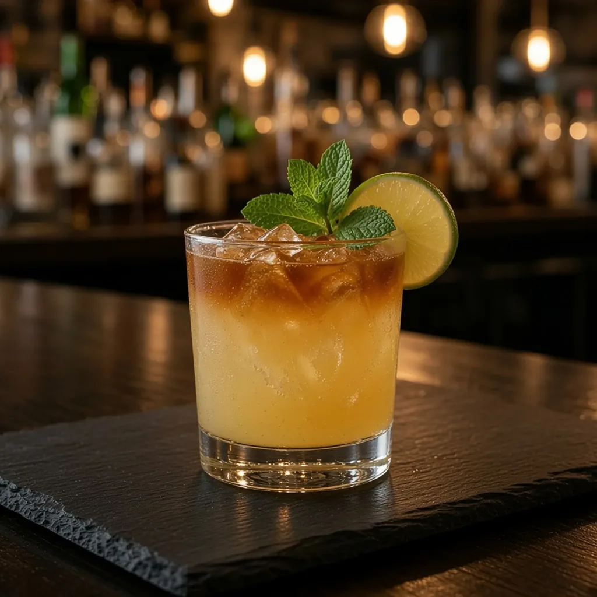
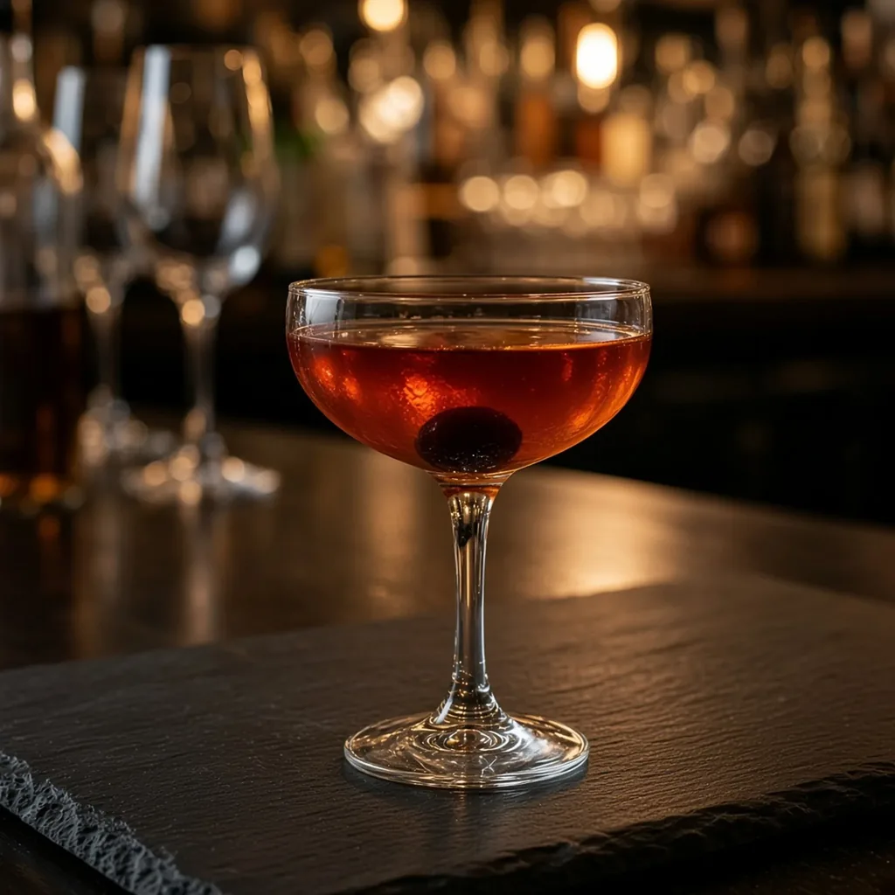
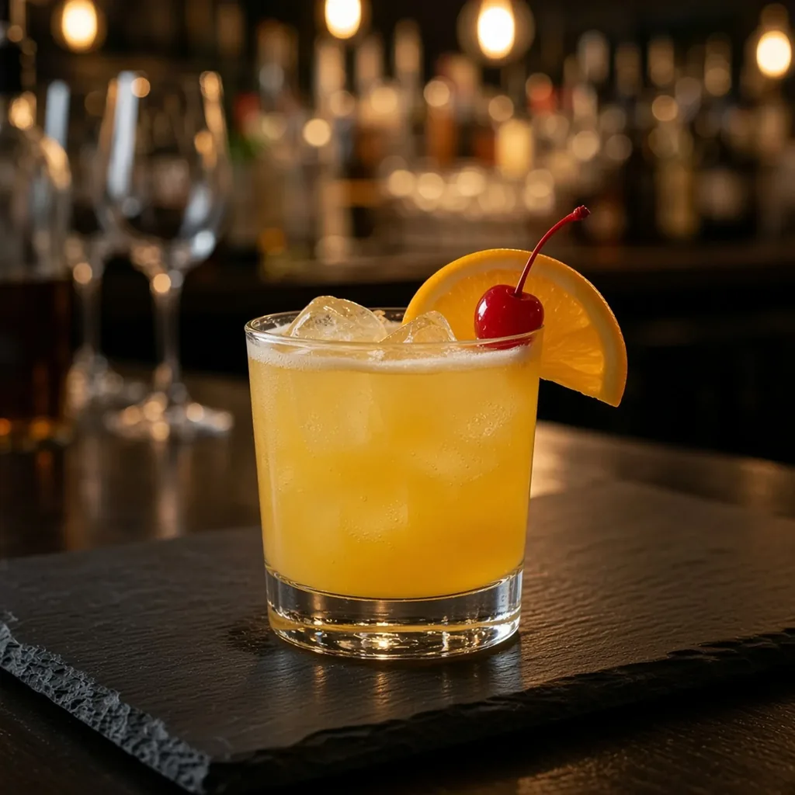
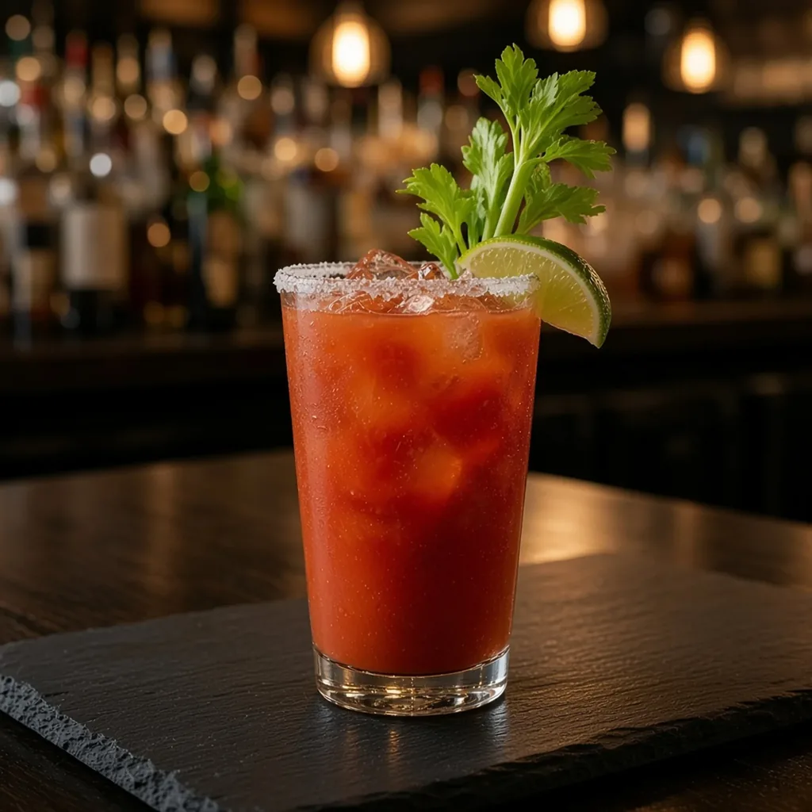

Mai Tai
Two rums, lime, orange curaçao and almond syrup.

Two rums, lime, orange curaçao and almond syrup.

Shake 2 oz pineapple juice with 1 oz orange juice, the orgeat and the lime juice.
Pour it, then start a room. Drinking is optional in every game.

ManhattanRye whisky and sweet vermouth, stirred and served up with a cherry.
Amaretto SourSweet almond liqueur sharpened with fresh lemon. French 75Gin, lemon and sugar topped with sparkling wine.
French 75Gin, lemon and sugar topped with sparkling wine.

Classic Canadian CaesarCanada's cocktail: vodka and clam-tomato juice with hot sauce, Worcestershire and a celery salt rim.